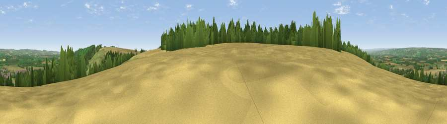

Viewpoint near Sherburn
#14811 in England · top 31% of its area beats it · near SherburnThe view, rendered

A 360° render of this exact spot computed from the terrain model, tree cover and land cover — summer colours, afternoon light, calibrated against photographs of famous viewpoints. Real trees, hedges and buildings will differ in detail.
The panorama
Grey silhouette: terrain skyline in each direction (720 bearings, Earth curvature and refraction included). Dashed green: skyline with trees (+15 m) and buildings (+8 m) as obstacles. Blue strip: how far the ground is visible on each bearing.
Where the view opens
Wedge length = distance to the farthest visible ground on that bearing (vegetation-aware). Rings at 10, 25 and 50 km.
What fills the view
50% cropland · 31% grassland · 15% woodland · 3% built-up
Angular shares of the visible panorama (visual magnitude), not map area. Landscape diversity 0.48 (0–1 Shannon).
Key numbers
More beautiful places nearby
The staircase of upgrades: each row has a higher view potential than everything closer. Driving times are estimates from straight-line distance, calibrated against real road routing — check an actual route before setting out.
| Place | Direction | Drive | Score |
|---|---|---|---|
| Viewpoint near Sherburn | E · 1 km | ~3 min | 66.5 |
| Viewpoint near Ganton | ENE · 3 km | ~8 min | 70.1 |
| Viewpoint near West Heslerton | W · 4 km | ~8 min | 70.5 |
| Viewpoint near Settrington | WSW · 12 km | ~22 min | 72.3 |
| Seamer Beacon | NNE · 13 km | ~24 min | 76.9 |
| Olivers Mount | NE · 14 km | ~26 min | 80.3 |
| Viewpoint near Ravenscar | N · 26 km | ~42 min | 82.7 |
| Viewpoint near Ravenscar | N · 26 km | ~42 min | 87.3 |
54.16568, -0.53302 · source: screening · position refined by local search. Computed location — check access rights before visiting.